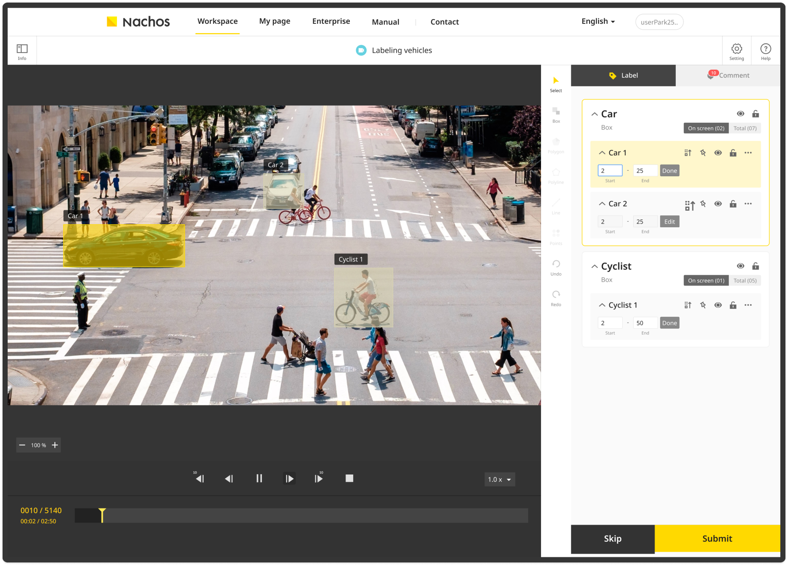

PROBLEM
고객마다 다른 수집 조건을 수용하면서도, 대규모 데이터의 품질 기준과 처리 상태를 일관되게 유지해야 했습니다.
CASE STUDY / 05 · DATA OPERATIONS
고객별 데이터 수집 프로젝트 생성부터 참여자 데이터 수집, 대규모 관리, 라벨링, 검수·반려, 납품까지를 하나의 운영 흐름으로 만든 0→1 데이터 플랫폼입니다.

AT A GLANCE
고객마다 다른 수집 조건을 수용하면서도, 대규모 데이터의 품질 기준과 처리 상태를 일관되게 유지해야 했습니다.
프로젝트별 데이터셋 조건과 공통 수집·가공·품질관리 흐름을 분리했습니다.
데이터 관리·라벨링 도구, 인프라, 백엔드·프론트엔드, 운영을 0에서부터 설계·구현했습니다.
이미지 60만 + 라벨링 60만2020 NIA 사업에서 공개된 이미지와 JSON 라벨링
01 CONTEXT & PROBLEMS
AI 데이터 구축은 파일을 모으는 일로 끝나지 않습니다. 고객 요청에 맞는 수집 프로젝트를 정의하고, 일반 참여자로부터 데이터를 받고, 대규모 데이터를 관리하며, 라벨링과 품질관리 과정을 거쳐 신뢰할 수 있는 결과를 제공해야 합니다.
프로젝트마다 수집 목적과 조건은 달라질 수 있지만, 참여자 데이터 제출, 데이터 관리, 라벨링, 검수·반려, 납품은 반복되는 운영 흐름입니다. 이 과정을 프로젝트마다 수작업으로 만들면 데이터량과 참여자가 늘어날수록 품질 기준과 운영 절차를 일관되게 유지하기 어렵습니다.
서로 다른 고객의 데이터 수집 요구를 프로젝트별로 수용하면서도, 대규모 데이터의 수집·라벨링·검수·반려·납품을 반복 가능하고 품질 관리 가능한 하나의 흐름으로 운영하려면 어떻게 해야 하는가?
수집 대상, 제출 조건, 라벨링 규칙, 품질 기준은 프로젝트마다 달라집니다.
제출 데이터는 바로 결과가 아니라 라벨링·검수·반려를 거쳐야 합니다.
개발 후에도 참여자 흐름, 데이터 상태, 작업과 납품을 계속 관리해야 합니다.
02 SYSTEM APPROACH
Nachos에서 중요한 추상화는 고객별 수집 요청을 모두 다른 제품으로 보는 대신, 프로젝트마다 달라지는 데이터셋의 형태와 모든 데이터셋에 공통으로 필요한 수집·가공·품질관리 흐름을 분리하는 것이었습니다.
수집 대상, 제출 조건, 라벨링 규칙, 품질 기준처럼 데이터셋의 형태에 따라 달라져야 하는 요소는 프로젝트 단위에서 다뤘습니다. 반면 참여자 데이터 수집, 대규모 데이터 관리, 라벨링, 검수·반려, 승인된 데이터의 납품 또는 공개 데이터셋 이관은 일관된 흐름으로 체계화했습니다.
이 구조를 통해 새로운 데이터셋이 필요해도 공통 플랫폼 전체를 바꾸는 대신, 필요한 기능과 작업 규칙만 프로젝트에 맞게 추가하거나 조정할 수 있었습니다. 데이터 규모가 커져도 품질 기준과 처리 상태를 유지하며 새로운 과제를 수행할 수 있는 경계가 됐습니다.
flowchart TB
Request["고객 요청"] --> Project["프로젝트 정의<br/>데이터셋 형태 · 수집 조건 · 라벨링 규칙 · 품질 기준"]
Project --> Collect
subgraph Workflow["공통 수집 · 가공 · 품질관리 흐름"]
direction LR
Collect["참여자 데이터 수집"] --> Manage["대규모 데이터 관리"] --> Label["라벨링"] --> Review{"검수"}
end
Review -->|승인| Approved["승인된 데이터"] --> Delivery["고객 납품 또는<br/>공개 데이터셋 이관"]
Review -->|반려| Label
classDef project fill:#202027,stroke:#8586b8,color:#f1f1f4
classDef quality fill:#29293a,stroke:#a9abec,color:#f1f1f4
classDef result fill:#1d2421,stroke:#86aa98,color:#f1f1f4
class Project project
class Review quality
class Approved,Delivery result고객 요구는 단순한 프로젝트 이름이 아니라, 어떤 형태의 데이터를 어떤 조건으로 수집하고 어떤 규칙으로 라벨링·검수할지를 정하는 프로젝트 정의로 다뤘습니다. 이 정의가 공통 수집·가공 흐름의 입력이 되도록 해, 새로운 데이터셋 요구가 생겨도 전체 플랫폼을 바꾸기보다 해당 프로젝트에 필요한 기능과 작업 규칙을 추가하거나 조정할 수 있었습니다.
참여자가 제출한 데이터는 대규모 데이터 관리, 라벨링, 검수의 순서로 다음 단계에 전달됩니다. 각 단계는 같은 데이터의 서로 다른 처리 상태를 다루며, 승인된 결과만 납품이나 공개 데이터셋 이관으로 이어집니다. 이 구조를 통해 수집·가공·결과 제공이 분리된 개별 작업이 아니라 하나의 운영 흐름으로 유지됩니다.
라벨링은 결과를 만드는 과정이고, 검수·반려는 그 결과가 프로젝트별 품질 기준을 충족하는지 확인하는 과정입니다. 기준에 맞지 않는 결과는 다음 단계로 넘기지 않고 라벨링 단계로 되돌립니다. 이를 별도의 수작업 절차가 아니라 데이터 흐름 안의 반복 경로로 두어, 데이터 규모가 커져도 품질관리 기준을 일관되게 적용할 수 있게 했습니다.
03 CONTRIBUTION & OUTCOME
Nachos는 2020년 대규모 NIA AI 데이터 구축 사업의 운영 플랫폼으로 사용됐으며, 과제는 안정적으로 완료됐습니다. AI Hub 공개 페이지에는 Deeping Source가 참여기관으로 데이터 확보·제공, 추출·정제, 크라우드소싱 기반 데이터 가공, 결과물 검수·검증을 담당한 것으로 기록돼 있습니다.
차량·번호판 과제에서는 이미지 60만 건과 이에 대응하는 JSON 라벨링 60만 건이 공개됐습니다. 이는 Nachos가 수집 프로젝트 정의부터 데이터 가공과 품질관리, 대규모 과제 운영까지 하나의 흐름으로 수행한 결과입니다.
수집·관리·라벨링·검수·반려·납품을 하나의 운영 흐름으로 구현
실제 공공 AI 데이터 구축 과제를 Nachos 시스템으로 운영
차량·번호판 과제에서 공개된 데이터와 라벨링 규모